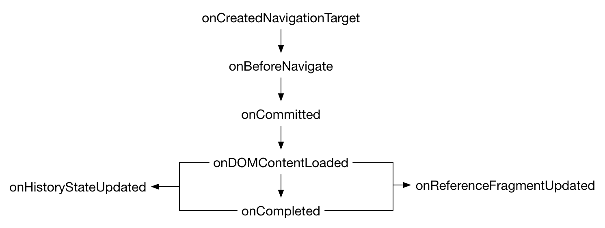

Add event listeners for the various stages of a navigation. A navigation consists of a frame in the browser transitioning from one URL to another, usually (but not always) in response to a user action like clicking a link or entering a URL in the location bar.
Compared with the {{WebExtAPIRef("webRequest")}} API: navigations usually result in the browser making web requests, but the webRequest API is concerned with the lower-level view from the HTTP layer, while the webNavigation API is more concerned with the view from the browser UI itself.
Each event corresponds to a particular stage in the navigation. The sequence of events is like this:

{{WebExtAPIRef("webNavigation.onBeforeNavigate", "onBeforeNavigate")}}{{WebExtAPIRef("webNavigation.onCommitted", "onCommitted")}}{{WebExtAPIRef("webNavigation.onDOMContentLoaded", "onDOMContentLoaded")}}{{WebExtAPIRef("webNavigation.onCompleted", "onCompleted")}}.{{WebExtAPIRef("webNavigation.onCreatedNavigationTarget", "onCreatedNavigationTarget")}} is fired before onBeforeNavigate if the browser needed to create a new tab or window for the navigation (for example, because the user opened a link in a new tab).Each navigation is a URL transition in a particular browser frame. The browser frame is identified by a tab ID and a frame ID. The frame may be the top-level browsing context in the tab, or may be a nested browsing context implemented as an iframe.
Each event's addListener() call accepts an optional filter parameter. The filter will specify one or more URL patterns, and the event will then only be fired for navigations in which the target URL matches one of the patterns.
The onCommitted event listener is passed two additional properties: a {{WebExtAPIRef("webNavigation.TransitionType","TransitionType")}} indicating the cause of the navigation (for example, because the user clicked a link, or because the user selected a bookmark), and a {{WebExtAPIRef("webNavigation.TransitionQualifier","TransitionQualifier")}} providing further information about the navigation.
To use this API you need to have the "webNavigation" permission.
Given a tab ID, retrieves information about all the frames it contains.
Fired when the browser is about to start a navigation event.
load event.Fired when the contents of the tab is replaced by a different (usually previously pre-rendered) tab.
{{Compat("webextensions.api.webNavigation")}}
{{WebExtExamples("h2")}}
This API is based on Chromium's chrome.webNavigation API. This documentation is derived from web_navigation.json in the Chromium code.
Microsoft Edge compatibility data is supplied by Microsoft Corporation and is included here under the Creative Commons Attribution 3.0 United States License.
// Copyright 2015 The Chromium Authors. All rights reserved. // // Redistribution and use in source and binary forms, with or without // modification, are permitted provided that the following conditions are // met: // // * Redistributions of source code must retain the above copyright // notice, this list of conditions and the following disclaimer. // * Redistributions in binary form must reproduce the above // copyright notice, this list of conditions and the following disclaimer // in the documentation and/or other materials provided with the // distribution. // * Neither the name of Google Inc. nor the names of its // contributors may be used to endorse or promote products derived from // this software without specific prior written permission. // // THIS SOFTWARE IS PROVIDED BY THE COPYRIGHT HOLDERS AND CONTRIBUTORS // "AS IS" AND ANY EXPRESS OR IMPLIED WARRANTIES, INCLUDING, BUT NOT // LIMITED TO, THE IMPLIED WARRANTIES OF MERCHANTABILITY AND FITNESS FOR // A PARTICULAR PURPOSE ARE DISCLAIMED. IN NO EVENT SHALL THE COPYRIGHT // OWNER OR CONTRIBUTORS BE LIABLE FOR ANY DIRECT, INDIRECT, INCIDENTAL, // SPECIAL, EXEMPLARY, OR CONSEQUENTIAL DAMAGES (INCLUDING, BUT NOT // LIMITED TO, PROCUREMENT OF SUBSTITUTE GOODS OR SERVICES; LOSS OF USE, // DATA, OR PROFITS; OR BUSINESS INTERRUPTION) HOWEVER CAUSED AND ON ANY // THEORY OF LIABILITY, WHETHER IN CONTRACT, STRICT LIABILITY, OR TORT // (INCLUDING NEGLIGENCE OR OTHERWISE) ARISING IN ANY WAY OUT OF THE USE // OF THIS SOFTWARE, EVEN IF ADVISED OF THE POSSIBILITY OF SUCH DAMAGE.